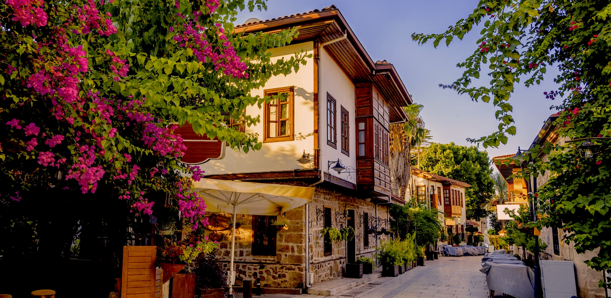

Antalya'da Gezilecek Yerler:
Antalya Türkiye'nin en popüler turistik bölgelerinden biridir ve her yıl milyonlarca yerli ve yabancı turist çeker. Antalya, muhteşem doğal güzellikleri, tarihi ve kültürel mirası, sıcak iklimi ve lüks tatil köyleri ile tanınır. Özellikle yaz aylarında, Akdeniz kıyısındaki plajları ve berrak deniziyle tatilcilerin gözde mekanlarındandır.
- Kaleiçi
- Düden Şelalesi
- Konyaaltı Plajı
- Antalya Müzesi
- Termessos Antik Kenti
- Antalya Limanı ve Yat Limanı
- Perge Antik Kenti
- Olympos ve Yanartaş
Kaleiçi, Antalya'nın tarihi merkezini oluşturan ve şehrin kalbi olarak bilinen eski şehir bölgesidir. Dar sokakları, Osmanlı ve Selçuklu dönemlerine ait tarihi yapıları, restoranları, kafeleri, hediyelik eşya dükkanları ve butik otelleriyle ünlüdür. Kaleiçi'nde gezinirken, tarihî yapıları keşfedebilir, deniz manzarasının tadını çıkarabilir ve yöresel lezzetleri deneyebilirsiniz. Tarihi atmosferi ve canlı yaşamıyla Kaleiçi, Antalya'nın en cazip ve renkli bölgelerinden biridir.
Düden Şelalesi, Antalya'nın doğusunda, şehir merkezine yaklaşık 10 kilometre uzaklıkta bulunan etkileyici bir doğa harikasıdır. Düden Çayı'nın kayalıklardan aşağıya düşerek oluşturduğu bu şelale, yaklaşık 20 metre yükseklikten denize dökülür. Üst düzey bir park alanı ve yürüyüş yollarıyla çevrelenmiştir. Ziyaretçiler, hem şelalenin üstünden akıp gelen suyun güzelliğini izleyebilir hem de şelalenin altındaki mağarayı keşfedebilirler. Düden Şelalesi, Antalya'nın doğal güzelliklerinden biri olarak turistlerin ilgisini çeker ve şehrin popüler turistik yerlerinden biridir.
Konyaaltı Plajı, Antalya'nın batısında, şehir merkezine yaklaşık 3 kilometre uzaklıkta bulunan popüler bir kumsaldır. Akdeniz'in berrak sularına kıyısı olan bu plaj, geniş bir kumsalı ve temiz denizi ile ziyaretçilerini ağırlar. Plajda şezlong ve şemsiye kiralama imkanları bulunur ve çevresinde çeşitli kafe ve restoranlar vardır. Konyaaltı Plajı, hem yerli hem de yabancı turistlerin deniz ve güneşin keyfini çıkarmak için tercih ettiği önemli bir tatil beldesidir.
Antalya Müzesi, Antalya şehir merkezinde bulunan ve Likya, Pamphylia, Pisidia, Lycia ve Antalya bölgesindeki diğer antik bölgelerden gelen arkeolojik eserleri barındıran önemli bir müzedir. 1922 yılında kurulan müze, 1985 yılında bugünkü modern binasına taşınmıştır. Müzede, Helenistik, Roma ve Bizans dönemlerine ait heykeller, mozaikler, sikkeler, seramikler, cam eserler ve diğer arkeolojik buluntular sergilenmektedir. Antalya Müzesi, ziyaretçilere Antalya'nın tarihî ve kültürel mirasını tanıtmak için önemli bir kaynaktır.
Termessos Antik Kenti, Antalya'nın doğusunda, güneybatı Toros Dağları'nın eteklerinde yer alan önemli bir arkeolojik alanı ifade eder. Bu antik kent, dağlık ve stratejik bir konumda kurulmuştur ve doğal savunma avantajlarına sahiptir. Helenistik dönemden kalma kalıntılarıyla ünlüdür ve tiyatro, agora, tapınaklar ve surlar gibi yapıları içerir. Termessos, antik dönemdeki savaşçı kültürü ve doğal manzarasıyla ziyaretçilerin ilgisini çeken bir yerdir. Ayrıca, kentin zirvesine tırmanan ziyaretçiler, muhteşem bir manzara eşliğinde antik kalıntıları keşfetme fırsatına sahiptirler.
Antalya Limanı ve Yat Limanı, Antalya'nın tarihi merkezinde yer alan önemli liman tesisleridir. Liman, Akdeniz'in turkuaz sularına açılan bir kapıdır ve şehre hem ticari hem de turistik anlamda önemli bir bağlantı noktası sağlar. Yat Limanı ise, özellikle turistik yatlar ve tekne turları için kullanılan modern bir marina alanıdır. Burada, deniz manzarasının keyfini çıkarabileceğiniz restoranlar, kafeler ve butik mağazalar da bulunmaktadır. Antalya Limanı ve Yat Limanı, ziyaretçilere muhteşem bir deniz manzarası ve liman atmosferi sunar, aynı zamanda şehrin turistik ve sosyal hayatının önemli bir parçasıdır.
Perge Antik Kenti, Antalya'nın doğusunda, Aksu ilçesi sınırları içinde bulunan ve Pamphylia bölgesinin en önemli antik şehirlerinden biridir. MÖ 7. yüzyılda kurulan Perge, Likya ve Pisidia bölgelerinin sınırlarında yer alır ve önemli bir ticaret ve kültür merkezi olarak bilinir. Kent, Helenistik ve Roma dönemlerinde zenginleşmiş ve büyümüştür. Perge, antik tiyatrosu, agora, stadyum, hamam, tapınaklar ve surlarıyla tanınır. Ayrıca, kentteki mozaikler ve heykeller de önemli arkeolojik kalıntılar arasındadır. Perge Antik Kenti, tarih ve arkeoloji meraklıları için önemli bir ziyaret noktasıdır ve Antalya'nın zengin tarihi mirasını keşfetmek isteyenler için ideal bir destinasyondur.
Olympos ve Yanartaş, Antalya'nın batısında, Kemer ilçesi yakınlarında yer alan doğal ve tarihi bir bölgedir. Olympos, antik bir Likya kentidir ve tarih boyunca önemli bir liman şehri olarak bilinir. Antik kentteki kalıntılar, ziyaretçilere antik dönemin izlerini görmeleri için fırsat sunar.